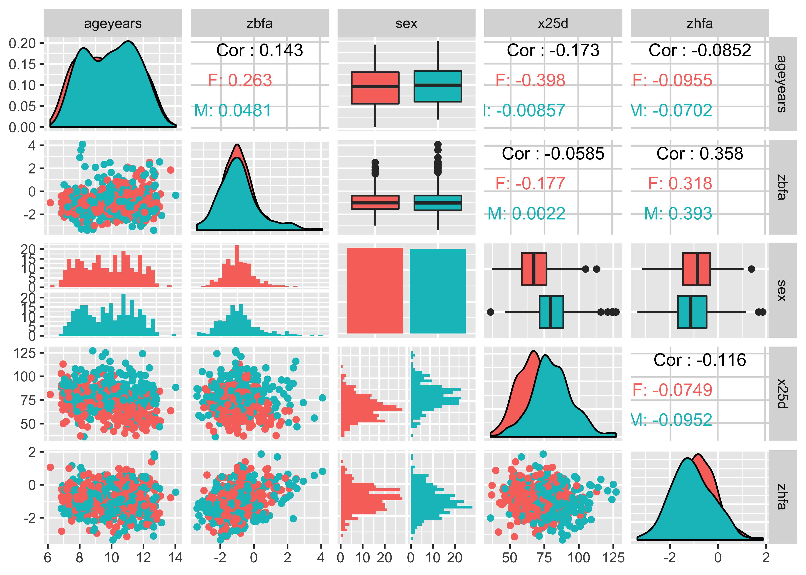
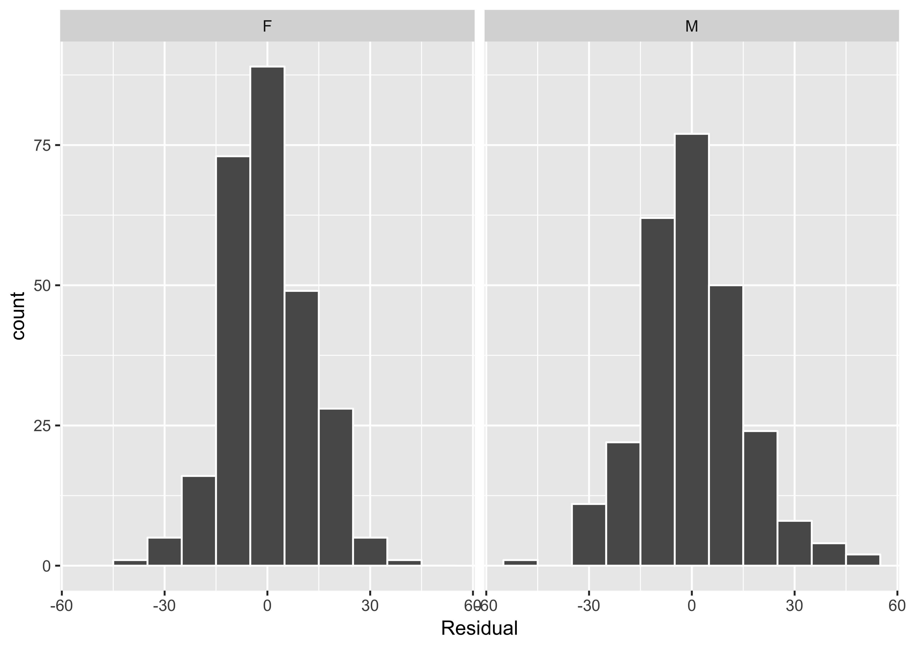
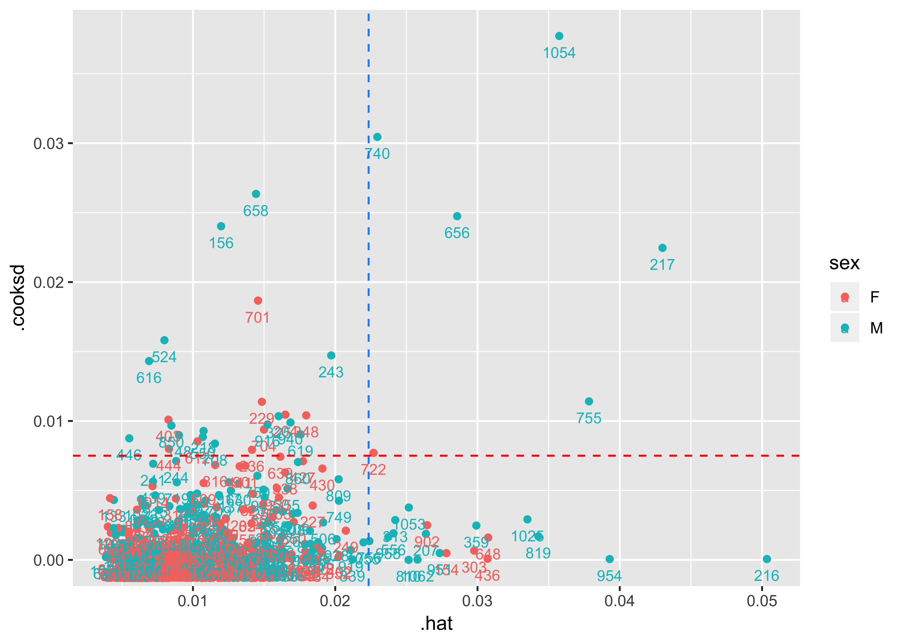
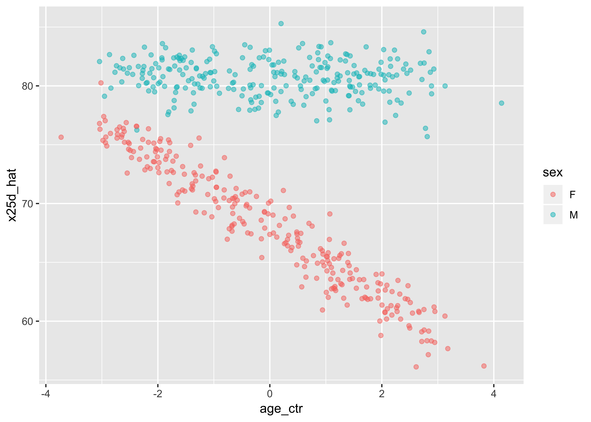

CONJ620: CM 2.6
Integrative Lab
Alison Hill
Overview
A complete knitted html file is due on Sakai by Monday August 13th at 8am. In class on that Tuesday, you’ll pair up with another student and review each others’ reports. Your final lab is due on Sakai by beginning of class Thursday July 19th (2:30pm).
The goal is to carefully, thoroughly, and thoughtfully conduct an linear regression analysis. You are also asked to communicate clearly about the steps in your analysis process with others, by sharing your R code, output, and narrative. As such, your code cannot “stand alone”- it is meant to complement / enhance / support your narrative.
Tools
You will use R Markdown to construct your analysis report. You’ll submit your work as an html file knit from your .Rmd file (please leave the default code chunk options for eval = TRUE and echo = TRUE). In that document, you’ll use dplyr, tidyr, and ggplot2 to do description and visualization. You may also wish to use the janitor package to make tabyls, and some of the accompanying adorn functions.
Your lab should serve as your own personal cheatsheet in the future for regression analyses. Give yourself the cheatsheet you deserve! Remember:
rmarkdownshould be your EDA documentation tool- your own words with
markdownformatting are your ONLY narrative tool dplyrshould be your data manipulation tooltidyrshould be your data reshaping tooljanitor::tabylshould be your data table-making tool- you may wish to combine with
knitr::kable()for formatting tables ggplot2should be your data visualization tool
For all things, graphical and tabular, if you’re dissatisfied with a result, discuss the problem, what you’ve tried and move on (remember my 30-minute rule). You’ll need this loaded at the top:
library(tidyverse) # all the good stuff
library(readxl) # for reading in xlsx files
library(janitor) # for clean_names
library(knitr) # for kable
library(moderndive) # for getting tables
library(corrr) # for correlation matrix
library(skimr) # for skim
library(GGally) # for ggpairs
library(broom) # for pulling out model resultsThe tidyverse meta-package includes dplyr, ggplot2, and tidyr.
The Data
You will work with an open access dataset from a publication in PLOS ONE titled: Vitamin D Status among Thai School Children and the Association with 1,25-Dihydroxyvitamin D and Parathyroid Hormone Levels. The data is available as an excel file on Data Dryad, where you can download the .xlsx file.
You could also access the data through a package called rdryad, from ROpenSci, which allows you to access the DataDryad Application Program Interface (API) from within R. To go this route, follow my code:
# install.packages("rdryad")
# install.packages("purrr")
library(rdryad) # to access the API
library(readxl) # to read in the xlsx file
library(purrr) # for 1 function: pluck!
path_to_xlsx <- dryad_fetch(dryad_files(doi = '10.5061/dryad.7763s/1')) %>%
pluck(1)
vitd <- read_xlsx(path_to_xlsx, sheet = 1)I’m also going to recommend you use the janitor::clean_names function, because some of these variable names start with an underscore and therefore will always need to be referenced surrounded by backticks.
library(janitor)
vitd <- vitd %>%
clean_names()
glimpse(vitd)Observations: 537
Variables: 19
$ id <dbl> 101, 102, 104, 105, 106, 107, 108, 110, 112, 113, ...
$ sex <chr> "F", "F", "F", "F", "M", "M", "M", "F", "F", "F", ...
$ ageyears <dbl> 7.749487, 7.040383, 7.289528, 7.251198, 6.845995, ...
$ height <dbl> 121.80, 120.40, 117.00, 115.60, 113.30, 121.60, 12...
$ weight <dbl> 20.0, 18.1, 19.6, 19.3, 17.0, 23.8, 24.1, 23.1, 22...
$ bmi <dbl> 13.48141, 12.48606, 14.31807, 14.44248, 13.24308, ...
$ zwfa <dbl> -1.29, -1.47, -1.09, -1.17, -2.18, -0.28, -0.07, -...
$ underweight <chr> "not underweight", "not underweight", "not underwe...
$ zbfa <dbl> -1.45, -2.24, -0.75, -0.65, -1.88, 0.28, -0.48, -1...
$ wasted <chr> "not wasted", "wasted", "not wasted", "not wasted"...
$ zhfa <dbl> -0.58, -0.12, -0.98, -1.20, -1.45, -0.77, 0.34, -0...
$ stunted <chr> "not stunted", "not stunted", "not stunted", "not ...
$ period <dbl> 0, 0, 0, 0, 0, 0, 0, 0, 0, 0, 0, 0, 0, 0, 0, 0, 0,...
$ ifyeswhen <chr> NA, NA, NA, NA, NA, NA, NA, NA, NA, NA, NA, NA, NA...
$ school <dbl> 1, 1, 1, 1, 1, 1, 1, 1, 1, 1, 1, 1, 1, 1, 1, 1, 1,...
$ baseline_ca <dbl> NA, NA, NA, 57.6876, NA, NA, 290.4152, 131.2554, N...
$ pth <dbl> 66.7, 55.1, 29.5, 48.9, 20.7, 23.9, 23.4, 24.7, 33...
$ x25d <dbl> 72.2, 73.4, 64.6, 73.6, 88.5, 85.8, NA, 75.2, 82.9...
$ x125d <dbl> 265, 144, 320, 245, 251, 206, 200, 205, 254, 223, ...That is better! You are ready to start exploring the vitd data.
Exploratory Data Analysis
We’ll conduct a linear regression analysis to examine the impact of age and BMI, and its interaction with sex, on serum 25(OH)D concentrations (a measure of vitamin D levels). If you read in the data using rdryad, you can also download the codebook like this:
codebook <- read_xlsx(path_to_xlsx, sheet = 2)The relevant variables you will need are:
lm_vars <- c("sex", "bmi", "ageyears", "_25D")
codebook %>%
filter(Variable %in% lm_vars) %>%
knitr::kable()| Variable | Description | Unit or coding where applicable |
|---|---|---|
| sex | Sex of child participant | F=female, M=male |
| ageyears | Age of child participant | YEARS |
| bmi | Body Mass Index of child participant | kg/m2 |
| _25D | Serum 25-hydroxyvitamin D concentrations | nmol/L |
Recall that a new exploratory data analysis involves three things:
- Looking at the raw values.
dplyr::glimpse()
- Computing summary statistics of the variables of interest.
skimr::skim()corrr::correlate()
- Creating informative visualizations.
ggplot2::ggplot()geom_histogram()orgeom_density()for numeric continuous variablesgeom_bar()orgeom_col()for categorical variables
GGally::ggpairs()
Conduct a thorough EDA of the vitd data. You may wish to have a level 1 header (#) for your EDA, then use level 2 sub-headers (##) to make sure you cover all three EDA bases. Remember from our previous EDA integrative lab, at a minimum you should answer these questions:
- How many variables/columns?
- How many rows/observations?
- Which variables are numbers?
- Which are categorical variables (numeric or character variables with variables that have a fixed and known set of possible values; aka factor variables)?
- Complete this sentence: “There is one row per…”
- What are the correlations between variables? Does each scatterplot support a linear relationship between variables? Do any of the correlations appear to be conditional on the value of a categorical variable (like
sex)?
At this stage, you may also find you want to use filter, mutate, arrange, select, or count. Let your questions lead you!
small_vitd <- vitd %>%
select(ageyears, zbfa, sex, x25d, zhfa)
ggpairs(small_vitd, aes(colour=sex))
Regression modeling
Fit a multiple regression model and get the regression table. Interpret the output from the regression table (in complete sentences, but you may use bullet points to organize). You may wish to enhance the interpretability of your results by mean centering numerical predictor variables.
Some examples:
- Parallel slopes example [here](http://moderndive.netlify.com/7-multiple-regression.html#model4table)
- Interaction model [here](http://moderndive.netlify.com/7-multiple-regression.html#model4interactiontable)The authors state: “Specifically, serum 25(OH)D concentrations were 19% higher in males at the mean age (9.9 years).” Is that true? In your narrative, walk through how you would use the numbers in the regression table to arrive at a numerical answer.
vitd <- vitd %>%
mutate(age_ctr = ageyears - mean(ageyears))
dmod <- lm(x25d ~ age_ctr*sex + zbfa + zhfa, data = vitd)
get_regression_table(dmod)# A tibble: 6 x 7
term estimate std_error statistic p_value lower_ci upper_ci
<chr> <dbl> <dbl> <dbl> <dbl> <dbl> <dbl>
1 intercept 66.4 1.08 61.7 0 64.3 68.6
2 age_ctr -3.09 0.486 -6.37 0 -4.05 -2.14
3 sexM 12.5 1.18 10.6 0 10.2 14.9
4 zbfa 0.145 0.592 0.246 0.806 -1.02 1.31
5 zhfa -1.74 0.759 -2.29 0.022 -3.23 -0.248
6 age_ctr:sexM 2.96 0.705 4.20 0 1.57 4.34 d_pts <- get_regression_points(dmod)Residual Analysis
Perform a (raw) residual analysis first with a histogram, faceting by sex. Also look at the residuals as compared to the two predictor variables:
- \(x_1\): numerical explanatory/predictor variable of
age - \(x_2\): categorical explanatory/predictor variable of
sex
ggplot(d_pts, aes(x = residual)) +
geom_histogram(binwidth = 10, color = "white") +
labs(x = "Residual") +
facet_wrap(~sex)
ggplot(d_pts, aes(x = age_ctr, y = residual)) +
geom_point() +
labs(x = "age", y = "Residual") +
geom_hline(yintercept = 0, col = "blue", size = 1) +
facet_wrap(~ sex)
Outlier Analysis
Examine points with high leverage and discrepancy (use the externally studentized residuals as the index for discrepancy). How many observations would you expect to have high discrepancy in this sample? Do you see any observations that have both high leverage and discrepancy? Is
d_diag <- augment(dmod, data = vitd) %>%
mutate(.ext.resid = rstudent(dmod))
# leverage
k <- 3
mean_hat <- (k + 1)/nrow(vitd)
d_diag %>%
select(id, .hat) %>%
filter(.hat > (3*mean_hat)) id .hat
1 154 0.02781555
2 207 0.02637300
3 216 0.05034237
4 217 0.04300224
5 303 0.02976582
6 313 0.02421982
7 359 0.02991766
8 436 0.03071131
9 556 0.02409323
10 648 0.03075009
11 656 0.02856977
12 722 0.02268958
13 740 0.02296305
14 755 0.03783697
15 756 0.02239927
16 810 0.02515592
17 819 0.03427783
18 902 0.02646237
19 951 0.02734662
20 954 0.03929082
21 955 0.02372193
22 1025 0.03350995
23 1053 0.02517300
24 1054 0.03574501
25 1062 0.02577991# discrepancy
d_diag %>%
filter(abs(.ext.resid) >= 2) %>%
select(id, ageyears, .resid, .std.resid, .ext.resid) %>%
arrange(desc(abs(.ext.resid))) id ageyears .resid .std.resid .ext.resid
1 616 8.822724 47.25680 3.511245 3.550054
2 156 8.269678 -46.28809 -3.448065 -3.484673
3 524 9.619439 46.16004 3.431614 3.467663
4 658 11.943870 44.05147 3.285540 3.316866
5 446 9.414100 41.41208 3.074817 3.100073
6 740 9.901437 37.22064 2.788160 2.806464
7 701 6.958248 36.89580 2.752035 2.769563
8 403 8.045175 -36.23028 -2.693803 -2.710125
9 850 10.887060 35.01967 2.604066 2.618635
10 158 9.474333 33.98932 2.521972 2.535047
11 1054 13.017110 -32.76722 -2.470774 -2.482968
12 148 11.467490 -32.72256 -2.433903 -2.445487
13 133 9.860370 -32.45912 -2.408755 -2.419933
14 241 11.092400 -32.19180 -2.392238 -2.403155
15 444 10.158800 32.17293 2.392171 2.403086
16 218 7.921971 -30.41363 -2.264144 -2.273164
17 656 12.373720 29.90983 2.246972 2.255754
18 550 11.363450 -29.77785 -2.216750 -2.225124
19 612 7.850787 29.76977 2.215730 2.224090
20 244 10.996580 -29.45503 -2.190650 -2.198680
21 439 9.685147 29.08890 2.161640 2.169300
22 229 10.128680 -28.54158 -2.129190 -2.136447
23 1014 8.715948 28.29060 2.102285 2.109218
24 243 10.988360 -28.02182 -2.095609 -2.102464
25 708 7.722108 27.84815 2.073991 2.080594
26 1033 11.141680 27.30186 2.027986 2.034072n <- nrow(vitd)
k <- 3 # predictors (not including intercept)
d <- 4/(n - k - 1)
d[1] 0.00750469d_diag %>%
filter(.cooksd > d) %>%
select(id, x25d, .cooksd) %>%
arrange(desc(.cooksd)) id x25d .cooksd
1 1054 46.6 0.037717119
2 740 116.0 0.030451086
3 658 124.0 0.026347160
4 656 109.0 0.024747939
5 156 36.1 0.024023060
6 217 55.9 0.022462063
7 701 113.0 0.018666978
8 524 125.0 0.015816704
9 243 50.9 0.014722458
10 616 127.0 0.014313795
11 755 58.4 0.011413686
12 229 41.8 0.011382900
13 204 103.0 0.010457442
14 348 84.3 0.010406030
15 325 109.0 0.010345458
16 403 36.9 0.010093313
17 940 105.0 0.009892844
18 916 56.5 0.009750818
19 850 114.0 0.009672431
20 704 50.0 0.009385923
21 218 50.2 0.009282641
22 619 58.7 0.009035615
23 148 46.6 0.008982435
24 550 50.1 0.008850494
25 446 121.0 0.008751905
26 612 105.0 0.008529980
27 708 108.0 0.008372157
28 444 101.0 0.007992574
29 236 37.2 0.007929961
30 722 84.3 0.007705361ggplot(d_diag, aes(x = .hat, y = .cooksd, color = sex)) +
geom_point() +
geom_text(aes(label = id), size = 3, vjust = 2) +
geom_hline(aes(yintercept = d), colour = "red", lty = "dashed") +
geom_vline(aes(xintercept = 3*mean_hat), color = "dodgerblue", lty = "dashed")
Sums of Squares
Fill in the blanks in the following code block to calculate the Residual, Model, and Total Sums of Squares:
vitd_ss <- d_diag %>%
summarise(total_ss = sum((___ - mean(___))^2),
resid_ss = sum((___ - ___)^2),
model_ss = sum((___ - mean(___))^2))
vitd_ssUsing dplyr, show that:
- The total sums of squares is equal to the residual plus the model sums of squares
- The total sums of squares divided by \((n-1)\) is equal to the variance of the
youtcome variable (hint: you may need to look how many observations actually contributed to the model- not the same as the original \(n\) due to missing values!) - The \(R^2\) value in your model output is the model sums of squares divided by the total sums of squares (hint:
broom::glance(my_model)).
The “null” model
In class, I asserted that lm is by default comparing the model you specify in your lm call to a null model defined by using a line with an intercept but slope = 0, which estimates the mean of \(y\). Let’s build an intercept-only linear regression model to prove this.
vitd_complete <- vitd %>%
drop_na(x25d, sex, ageyears, zbfa, zhfa)
int_mod <- lm(x25d ~ 1, data = vitd_complete)
get_regression_table(int_mod)# A tibble: 1 x 7
term estimate std_error statistic p_value lower_ci upper_ci
<chr> <dbl> <dbl> <dbl> <dbl> <dbl> <dbl>
1 intercept 74.3 0.67 111. 0 73.0 75.6anova(int_mod, dmod)Analysis of Variance Table
Model 1: x25d ~ 1
Model 2: x25d ~ age_ctr * sex + zbfa + zhfa
Res.Df RSS Df Sum of Sq F Pr(>F)
1 527 124823
2 522 95212 5 29611 32.468 < 2.2e-16 ***
---
Signif. codes: 0 '***' 0.001 '**' 0.01 '*' 0.05 '.' 0.1 ' ' 1Look very carefully at this output and answer these questions:
- What is the
RSSfor line 1 (corresponding to the intercept-only model, Model 1) equal to that you calculated above? - What is the
RSSfor line 2 (corresponding to Model 2) equal to that you calculated above? - What is the
Sum of Sqequal to that you calculated above? - In < 3 sentences, explain what it means to use
lm(y ~ x + z)versuslm(y ~ 1), and what happens “under the hood” here that you now see in theanovaoutput.
RMSE
the root mean square error for regression says how far typical points are above or below the regression line. The RMSE is to the regression line as the SD is to the average. For instance, if the scatter diagram is football-shaped, about 68% of the points on the scatter diagram will be within one RMSE of the regression line, about 95% of then will be within 2 RMSE of the regression line
The advantage of RMSE metric is that it is more “normalized”. Specifically, SSE will be depending on the amount of the data. The MSE would not depend on the amount of the data, but the RMSE also expresses the error in the same units as y y .
# Mean squared error
d_diag <- d_diag %>%
summarize(mse = mean(.resid^2),
rmse = sqrt(mse),
rss = sum(.resid^2))
# Root mean squared error
rmse <- sqrt(mse)
# Residual sum of squares
rss <- sum(residuals(fit)^2)
## Proportion of values contained between 1 RMSE
print(mean(abs(ehat) < RMSE))
## [1] 0.7133581
## Proportion of values contained between 2 RMSEs
print(mean(abs(ehat) < 2 * RMSE))Replication
In the original paper, they presented this figure:
Look at the published figure carefully:
- What appears to be the minimum value of serum 25D levels?
- What appears to be the max?
- Do those match your EDA?
- More generally, if you saw this kind of plot “in the wild” (i.e., you were a reviewer, or a peer showed it to you), what
Now, recreate this figure in ggplot2 using our data.
ggplot(vitd, aes(x = age_ctr,
y = x25d,
color = sex)) +
geom_smooth(method = "lm", se = FALSE) +
geom_point(alpha = .5)
ggplot(d_pts, aes(x = age_ctr,
y = x25d_hat,
color = sex)) +
#geom_smooth(method = "lm", se = FALSE) +
geom_jitter(alpha = .5, height = 1)
Report your process
You’re encouraged to reflect on what was hard/easy, problems you solved, helpful tutorials you read, etc. Give credit to your sources, whether it’s a blog post, a fellow student, an online tutorial, etc.
Grading
This lab is worth 5 points total, scored as follows:
2 points for your initial EDA:
2 (Strong attempt): EDA reflects strong independent problem solving, with clearly thought out attempts to approach questions and problems, and a diligent and honest effort to answer questions and find the solutions.
1 (Adequate attempt): EDA reflects some attempt to approach the posed tasks, but approach appears to be superficial and lacks depth of analysis. No obvious mistakes. Pleasant to read. No head scratchers. Solid and complete.
0 (No attempt or incomplete): Didn’t tackle all sections. Or didn’t make companion graphs. Or didn’t interpret anything but left it all to the “reader”. Or more than one technical problem that is relatively easy to fix.
3 points for the quality of the final EDA:
3 (Exceptional): EDA is thorough, concise, and clearly demonstrates ability to competently and thoughtfully work with data as well as how to report on that process as a complement to code. Impeccable organization and presentation in the report.
2 (Adequate): Hits all the elements in all sections. No obvious mistakes. Pleasant to read. No head scratchers. Solid and complete.
1 (Inadequate): EDA attempts to address question with substantial inaccuracies in analysis and/or interpretation. Didn’t tackle all sections. Or didn’t make companion graphs. Or didn’t interpret anything but left it all to the “reader”. Or more than one technical problem that is relatively easy to fix.
0 (Insufficient): Nothing to grade, assignment was late.